3D Specimen Adaptation Tool
I built a Unity tool for the EduVision development team to adapt existing 3D insect models using colours and markings from photos. Developers can correct the selection, preview the fit, and export the result. I designed and implemented the workflow, expanding a ladybug prototype to three insect types and ten photo-mappable body regions.

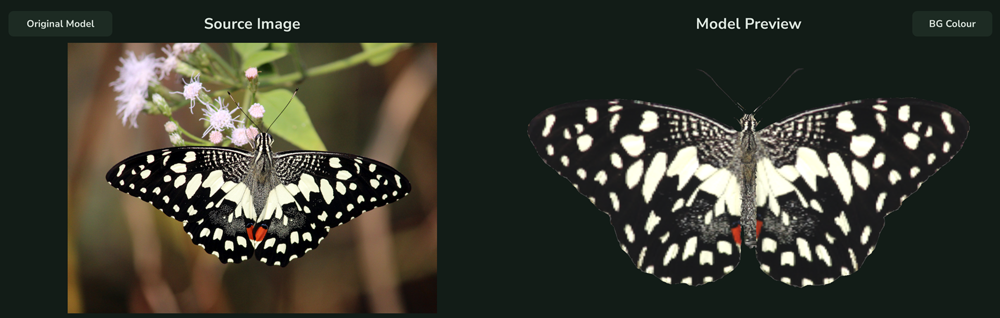
Give developers a way to fix the outline
Automatic detection gave developers a starting selection. In a check with three known shapes, two met my 80% overlap target. The narrow dragonfly abdomen reached about 70%, showing why the selection needed to remain editable.
I added movable points, freehand drawing, and an axis tool for narrow parts. Preview stays separate from Apply so developers can inspect the result and refine the selection before committing it.
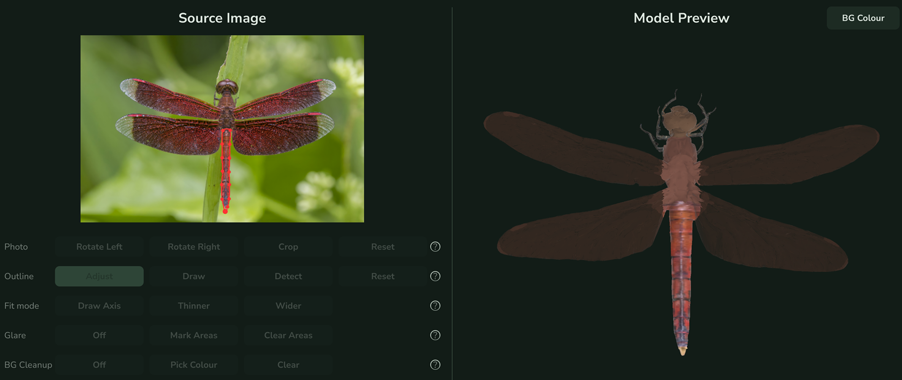
Choose how each part receives its colour
A photo may show one wing more clearly than the other. I added Mirror mode so developers can select one side and reuse its markings across both wings. Whole mode keeps both sides when their differences matter. Highlight Part makes the target region visible while the outline is being prepared.
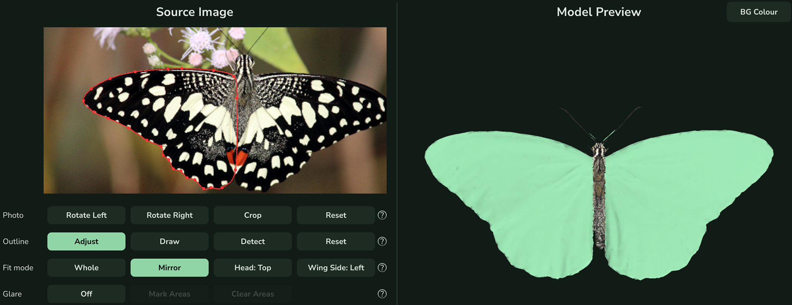
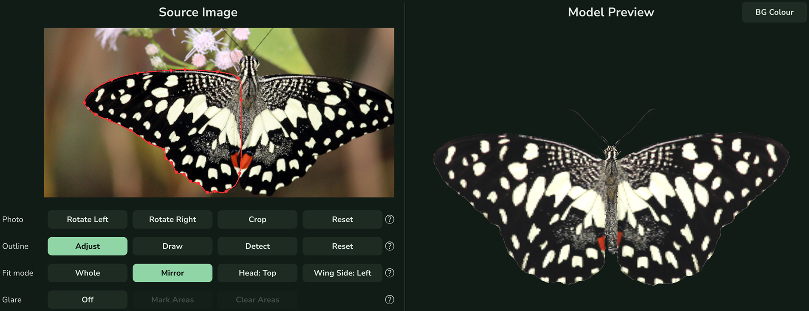
Dragonfly wings needed another option. Fitting the photo carried over their colour, but also picked up the leaf and stem visible through the photographed wings. I let developers keep the original wing texture and sample a colour from the photo instead. This changes the tint while retaining the existing vein detail and transparency.
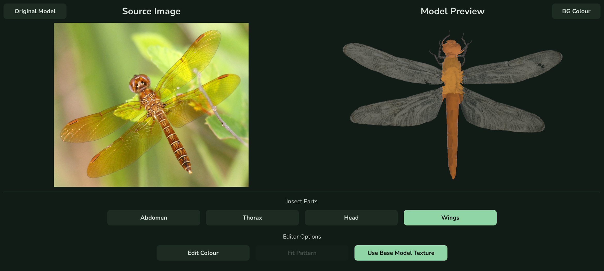
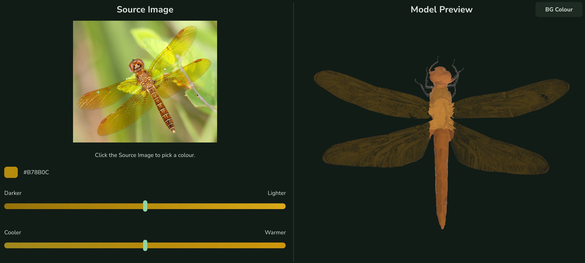
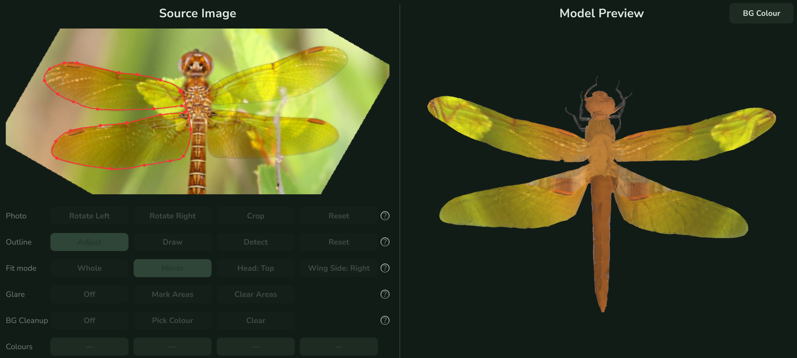
Clean up the background around the wing
Small patches of leaf colour could remain near the outline and appear on the fitted wing. I added colour-based background cleanup so developers can sample the unwanted colours and adjust the similarity range. The preview lets them check the edge as they work, because a broad range can also remove colours belonging to the wing.
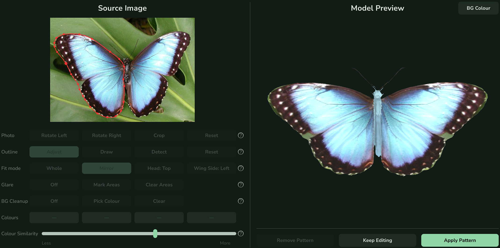
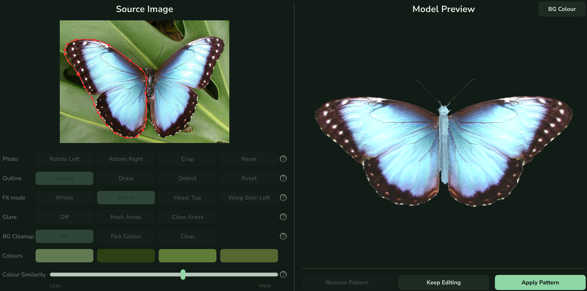
Reduce glare without losing the markings
Reflections on the ladybug photo transferred as bright patches across the shell and its spots. I added a control for marking glare areas, then checked the change in the model preview. It reduces the strongest reflections, although some bright areas remain. Keeping the correction local helps retain the surrounding pattern.
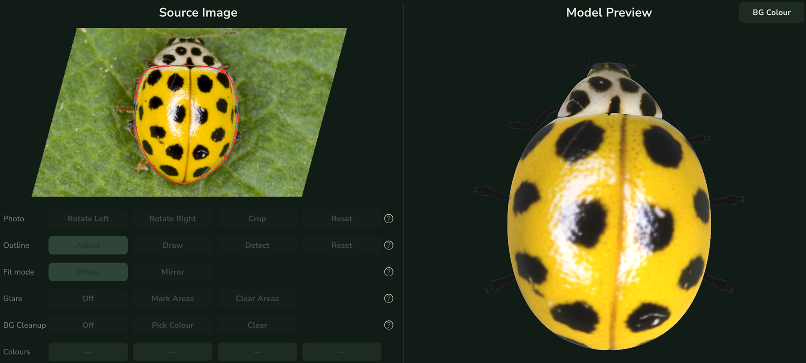
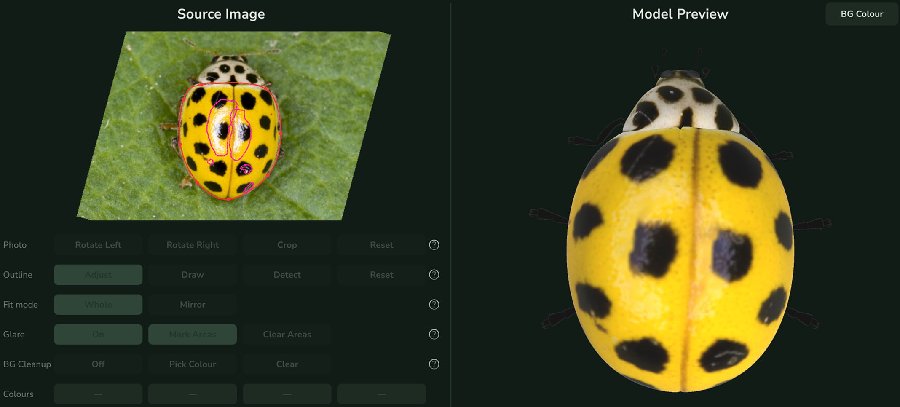
Take the edited result into another application
To complete the workflow, I added Export so developers can take their edited results into another application. They can export the full model as GLB or OBJ, or textures for all parts or the selected part, including applied photo patterns and colour edits.
Developers can choose 1024, 2048, or 4096 texture size, PNG or JPG images, a file name, and a destination folder. Each export creates a new folder to preserve earlier versions. This extends the workflow from preparing and checking a fit to handing the edited asset over for use elsewhere.
What I learned from the prototype
I completed six manual adaptations on prepared models, two for each insect type, with a median time of 2 minutes 55 seconds. Controlled automated checks completed 50 out of 50 fitting attempts. These checks covered fitting before the export feature was added. My manual trials used one machine and were all performed by me.
The project taught me to automate the starting point while giving developers control over the final fit. My next test would ask another developer to adapt an unfamiliar photo, export it, and import the result into the target application. I would check both where they hesitate and whether the markings, colours, and wing transparency survive that handover.